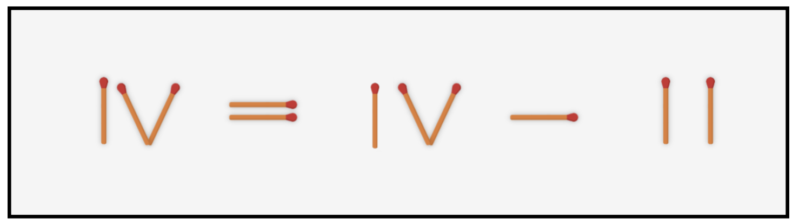
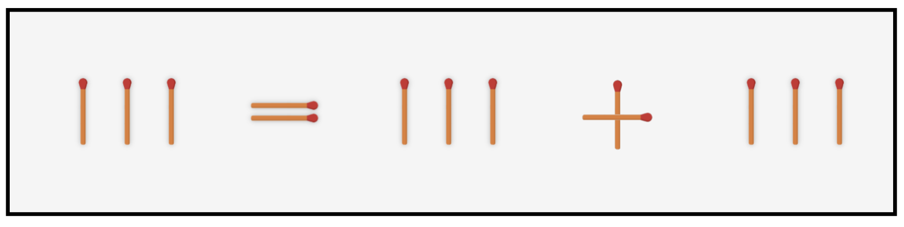

Solution

Abstract
Many problems seem to require a flash of insight to solve. What form do these sudden insights take, and what impact do they have on how people approach similar problems in the future? In this work, we prompted participants (N=189) to think aloud as they attempted to solve a sequence of five "matchstick-arithmetic" problems. These problems either all relied on the same kind of non-obvious solution (Same group) or a different kind each time (Different group). Using scalable analyses of participants' speech, we found that Same participants improved more rapidly than Different participants, and as they improved, they talked more and talked about different things when solving later problems. Specifically, they were more likely to spontaneously categorize the problem they were working on. Taken together, these findings suggest that a hallmark of transferable insights is their accessibility for verbal report, even if the underlying precursors of insight remain difficult to articulate.
Below you can see a Roman numeral equation constructed from matchsticks. It is invalid, as it reads:
"4 = 4 - 2", and 4 ≠ 2.
Your goal: move a single stick to make the equation valid, so that the left side equals the right side.
(Click "Show Solution" to see the answer.)

In the problem above, the solution requires moving a stick to change a numeral's value. Empirically, this was the easiest problem type to solve!
Now, try solving this one:

To see the full problem set as well as all of our findings, please see the paper!